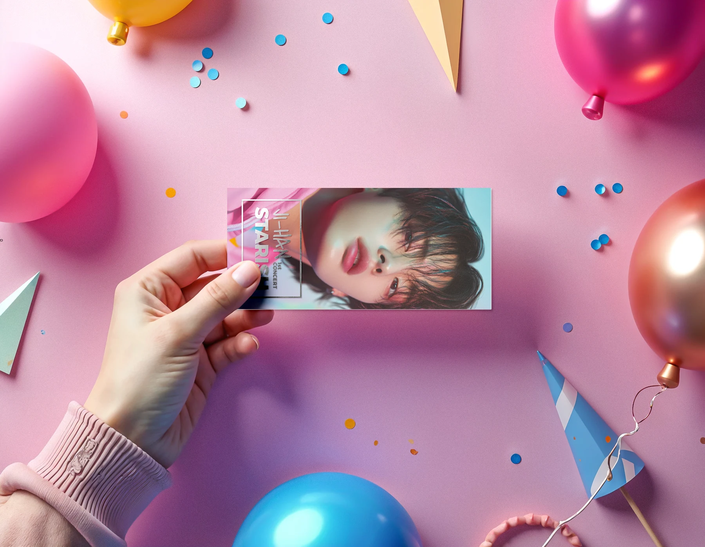
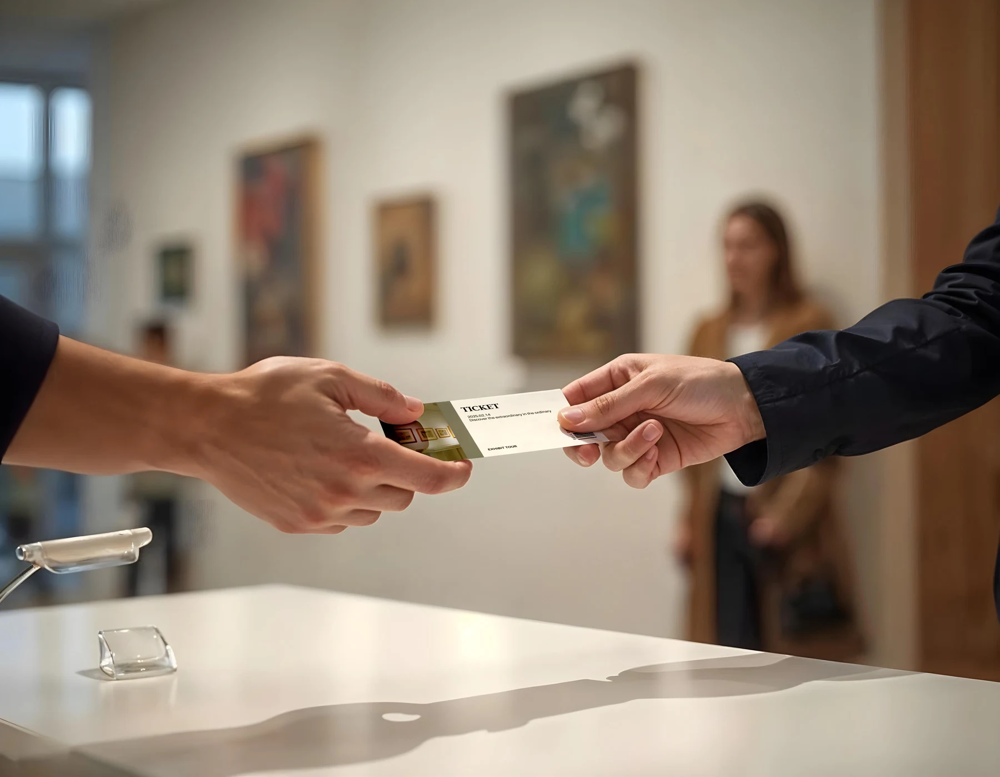
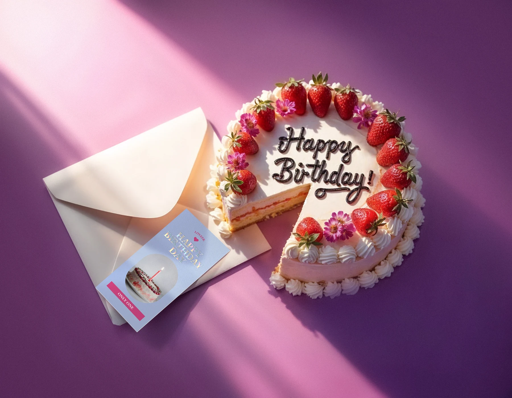
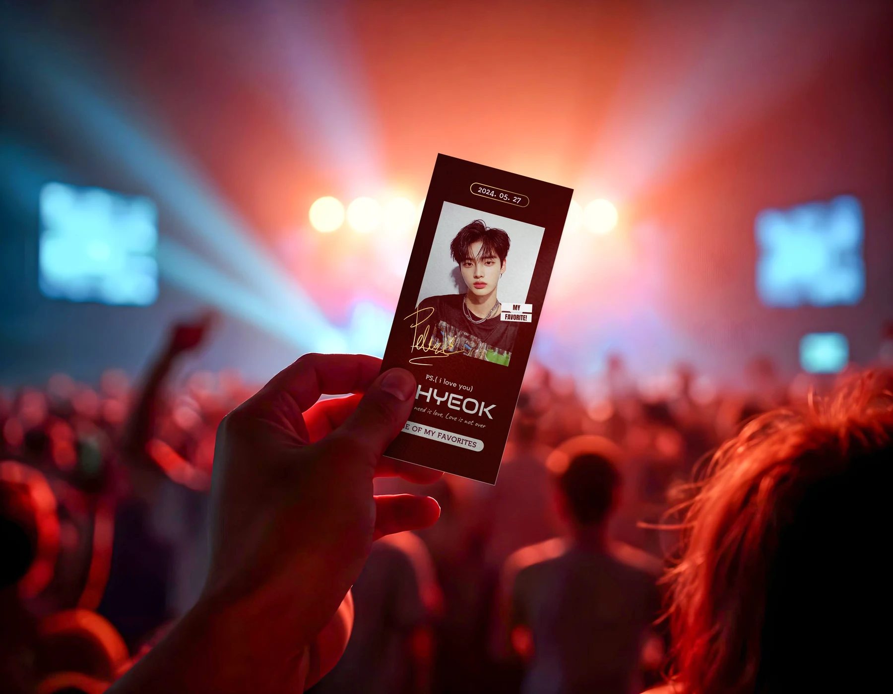
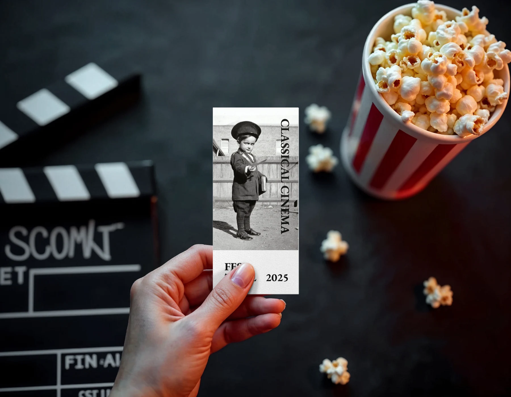

← 모든 작업물AI / 12
AI · Photo Ticket
포토티켓 연출컷 제작
2024- 제작 연도
- 2024
- 작업 기간
- 3일
- 사용 프로그램
- Gemini, Midjourney, Photoshop
- 아트웍
- 팀 내 BX팀 제공
기여도 및 작업 범위
AI를 사용해 제품 연출컷을 제작하였습니다. 부분적으로 합성을 진행했습니다. 제품 아트웍은 팀 내 BX팀에서 제공받았습니다.




